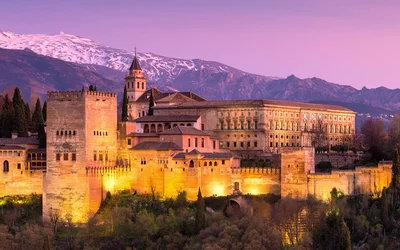
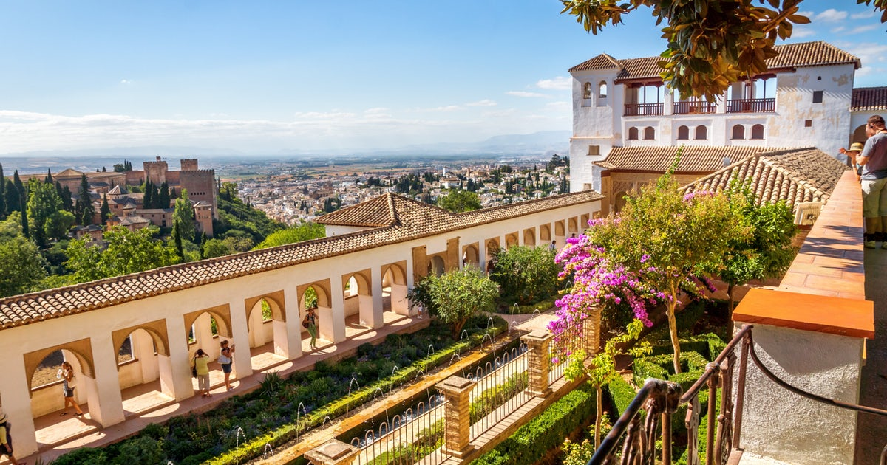
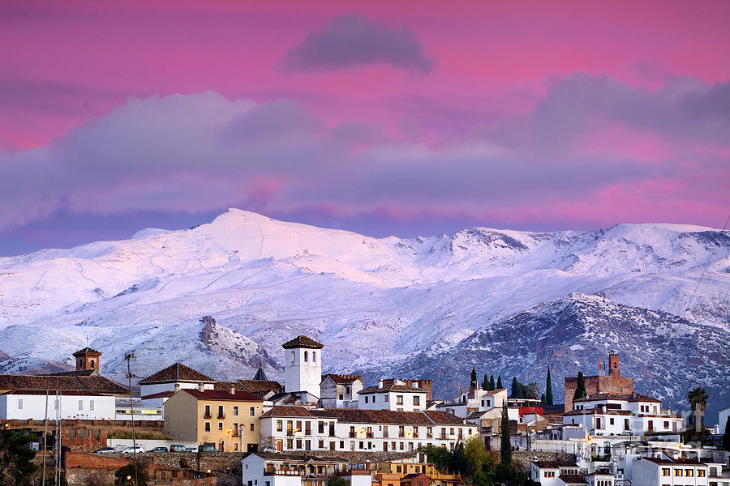
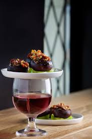
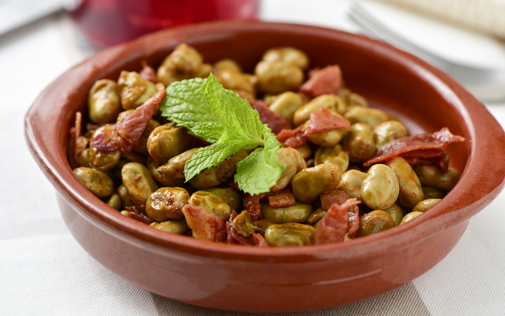
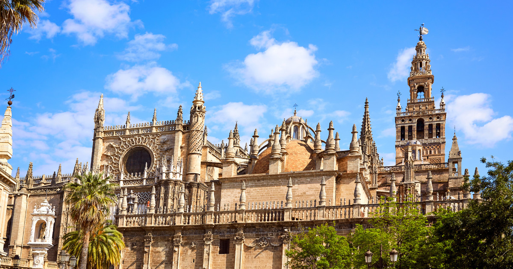
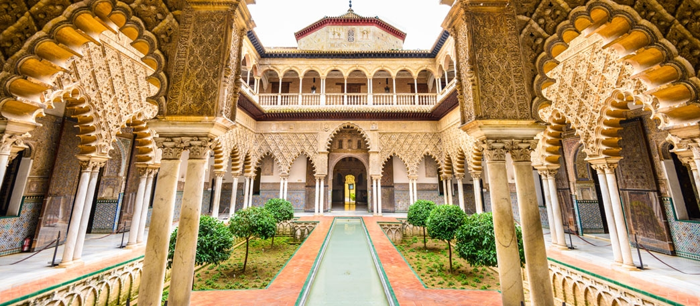
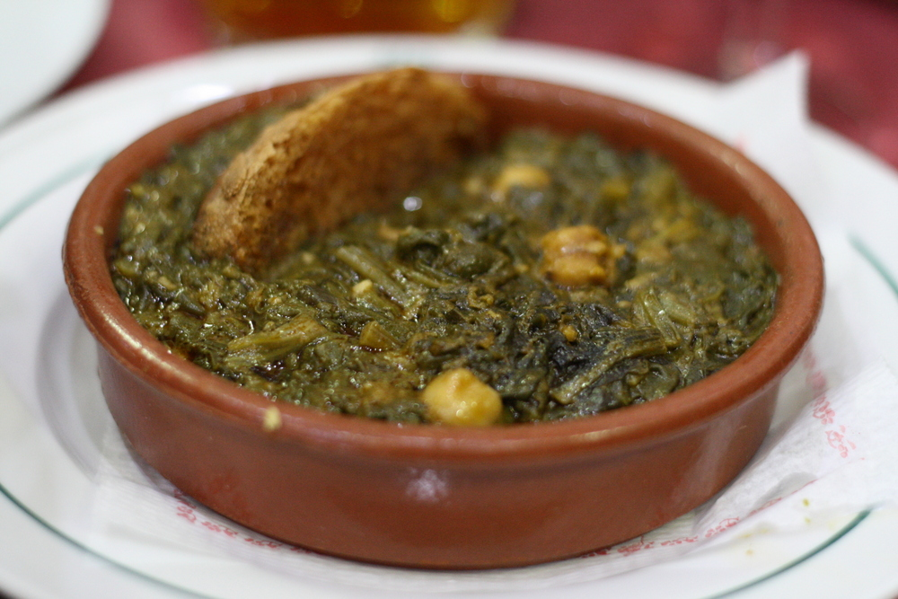

Andalucía’s culture was influenced by all three abrahamic religions (Christianity, Judaism, and Islam) as well as several other religions.
The Alhambra: The Alhambra is a beautiful red-walled palace situated on top of the hill “al-Sabika”, in the west of the city of Granada. It has a view of the whole city, as it was initially a military fortress in the 9th century. The Alhambra’s most famous period began when the first king of the Nasrid Dynasty (Mohammed ben Al-Hamar) arrived in the 13th century. The Alhambra became the royal residence of the Nasrid dynasty and many major constructions were made throughout their generations, including the Comares Palace, the Palace of the Lions, and the Partal Palace from the 14th century. The poems and Quran verses, appearing on so many of Alhambra’s walls, were engraved at this time in an intertwining fashion. Later from the 16th to the 20th century, during the time of the Catholic Monarchs, a new fourth palace, Palace of Charles V, was added for the Roman Emperor Charles V.
Also very popular are the Generalife Gardens around the Alhambra, built by the Nasrid rulers. It has water channels that the Moors mastered, fountains, lush greenery making it a paradisiacal retreat for anyone!
The Sierra Nevada: The Sierra Nevada is a striking snowy mountain range an hour’s drive from Granada city. It is best known for its touristic ski resort and national park, but also hidden cultural experiences in its small towns. The Sierra Nevada contains Europe’s southernmost ski resort on the slopes of Pico de Veleta, Spain’s third highest mountain peak, just 30 minutes away from Granada city. The ski season is from November to May and is suitable for skiers of all experience levels. In the mountain range is also the peaceful and quiet Sierra Nevada National Park, the largest national park in Spain, holding the highest mountain peak in Spain: Mulhacén. Providing hiking and biking trails in the open air, with rare flower species, birds, lizards, and Ibex along the way, it is an ideal location for outdoor-lovers in Andalucía! You may also want to stroll through Sierra Nevada’s white-washed villages in Las Alpujarras. The Trevélez village is famous for its cured ham, winding streets, restaurants, and souvenir shops. The similar village of Capileira is known for its 18th century church, and traditional handicrafts.
Tapas: The Spanish word “Tapa” traditionally means “a cover”. Interestingly, it now refers to the small portion of food commonly served with beer and wine at bars in Andalucía. This is because in the past, the most common drink served in Spanish taverns was wine. The taverns attracted many wine flies and other pests, making it necessary to cover drinks with a “tapa” lid. Simultaneously, the King (Alfonso X el Sabio) at the time made it illegal to serve alcohol without food, to prevent drunkenness. So Spanish taverns combined the two ideas and started covering wine glasses with the food on top, which is now a cultural tradition still practiced at authentic bars in Granada. Some typical tapas in Granada are: Berenjenas con Miel (fried aubergine with honey), Habas con Jamón (Broad beans and Spanish ham), and Setas Salteadas (fried and tossed mushrooms).
 Tortilla Sacromonte Granada: This is a unique version of the every-day Spanish “tortilla” (omelette) that is local to Sacromonte, a Roma neighbourhood in Granada. Its authentic recipe uses lamb or pork brains, testicles, and offal, and combines it into an egg omelette.
Check out the Love Granada - Information and Tourism page for detailed information on buses, trains, metro, and more transport in Granada.
The Cathedral of Seville: The Cathedral of Seville is a very impressive cathedral, best known for its high bell tower La Giralda, and is the symbol of Seville; Seville takes pride in the fact that it is the third-largest church in the world! The building was originally a mosque, with “La Giralda” being its minaret, and was built with the patterned style of Almohad architecture. La Giralda was the most exceptional one of three similar Almohad minarets, the other two being in Rabat and Marrakech, Morocco. In 1402, the mosque was converted into the current cathedral.
The Alcázar: The Alcázar is a wonderful palace in Seville, and the oldest in Europe that is still in use. Since the 11th century when it was started by the Moors, it has been modified by the Gothic era, the Mujédar era, and the Renaissance era. In the 10th century, the Alcázar was only a fort for the rulers at that time, and under the Abadid rulers in the 11th century, the western part of the palace was built. It the 12th century Almohad rulers added an eastern palace “Patio del Crucero”, and then in 1248, the line of Christian King Fernando III began residing in the palace. This began the period of the Gothic era, and the known Patio del Lion was built.
Espinacas con Garbanzos: This dish means “spinach with chickpeas” and is said to originate from the Moors in the 8th century. The Moors had imported spinach from Persia and chickpeas from Turkey and combined them with middle-eastern cumin to make this hearty stew. It is now very popular and served in many bars throughout Andalucía. This dish also then became common to eat during lent by the Spanish Catholic Church as it is very nutritious and full of protein.
Cazón en adobo: As Seville is near the Atlantic Ocean, it is known for amazing seafood. Cazón en adobo is Seville’s speciality: school shark fried in olive oil and perfectly seasoned with other spices.
Check out the Seville Andalucía transportation page for detailed information on buses/trams, metro, and more transport in Seville.
Back to the top.
Need to learn useful Spanish quickly?
Sources:
“Adobo and Fried ‘Pescaito.’” Tourism of Seville, www.visitasevilla.es/en/history/adobo-and-fried-pescaito. Picture of Generalife Gardens: “Alhambra and Generalife Skip-the-Line Tickets and Visit with an Expert Guide.” Musement, www.musement.com/us/granada/alhambra-and-generalife-skip-the-line-tickets-and-visit-with-an-expert-guide-1-77973/. Picture of spinach tapa: AloiseLauren, Lauren. “Want To Know Our Top 8 Must Try Dishes in Seville? Here They Are!” Devour Seville Food Tours, 4 Apr. 2019, devoursevillefoodtours.com/typical-foods-in-seville/. Picture of La Giralda: Angela, and Raquel. “Seville: Super Combo Cathedral and Alcazar 4-Hour Tour.” GetYourGuide, www.getyourguide.com/seville-l48/seville-in-one-day-tour-t67088/. Anne. “Top 10 Things To Do In Sierra Nevada, Spain.” Trip101, 8 Aug. 2017, trip101.com/article/things-to-do-sierra-nevada. Picture of Sierra Nevada: Castillo, Guido Montanes, et al. “Pink Sunset Over Granada And The Alhambra Palace And Sierra Nevada by Guido Montanes Castillo.” Fine Art America, fineartamerica.com/featured/pink-sunset-over-granada-and-the-alhambra-palace-and-sierra-nevada-guido-montanes-castillo.html. “Cómo Hacer Berenjenas Con Miel - Fácil.” Uncomo.com, comida.uncomo.com/receta/como-hacer-berenjenas-con-miel-27894.html. Picture of tapa on a glass: “Even in Spain, There's Disagreement about the Origin of the Term. Tapa Literally Means ‘Cover’ or ‘Lid." Some Say ‘Tapas’ Was Derived... | Recipes & Food | Tapas, Wine, Cooking Recipes.” Pinterest, www.pinterest.it/pin/316518680043598468/. “Granada: a Delight for Your Senses.” Iberia.com, www.iberia.com/us/destination-guide/granada/sacromonte-omelette/. “La Giralda.” La Giralda - Official Tourism Website of Andalucía, www.andalucia.org/en/cultural-tourism/visits/sevilla/monuments/la-giralda/. Nayler, Mark. “10 Things to Know Before Visiting Spain's Sierra Nevada Natural Park.” Culture Trip, 1 July 2018, theculturetrip.com/europe/spain/articles/10-things-to-know-before-visiting-spains-sierra-nevada-natural-park/. Quintero, Josephine, and Fiona Flores Watson. “Seville Alcazar - A Magnificent Palace.” Seville Alcazar - A Magnificent Palace, www.andalucia.com/cities/seville/alcazar.htm. “Real Alcázar | Seville, Spain Attractions.” Seville, Spain Attractions - Lonely Planet, www.lonelyplanet.com/spain/seville/attractions/real-alcazar/a/poi-sig/411802/360736. Picture of broad bean tapa: “Receta De Habitas Con Jamón | Demos La Vuelta Al Día.” Demoslavueltaaldia, www.demoslavueltaaldia.com/receta/habitas-con-jamon. “Sacred Destinations.” La Giralda - Seville, Spain, www.sacred-destinations.com/spain/seville-giralda. Picture of the Alhambra Building: “Secrets of the Alhambra.” Travel Leisure, www.travelandleisure.com/attractions/landmarks-monuments/secrets-of-alhambra. Sevilla, Alcázar de. “English.” Real Alcázar De Sevilla, www.alcazarsevilla.org/noticias/english-version/. “Sierra Nevada National Park.” Trek Sierra Nevada, treksierranevada.com/region/sierra-nevada-national-park. “Spinach and Chickpeas: Seville's Classic Tapa | The Everyday Food Blog.” Everyday Food Blog, 23 Aug. 2018, everydayfoodblog.com/recipes/spinach-and-chickpeas-seville/. “Tapas, the Little Dishes of Spain.” Living Language, www.livinglanguage.com/blog/2012/03/20/tapas-the-little-dishes-of-spain/. “The Alhambra.” Khan Academy, Khan Academy, www.khanacademy.org/humanities/ap-art-history/early-europe-and-colonial-americas/ap-art-islamic-world-medieval/a/the-alhambra. “The Giralda Tower Is The Symbol Of Seville.” Seville Traveller, 2 May 2019, www.seville-traveller.com/giralda-tower/. Picture of the Alcazar: “The Royal Alcazar the Palace of the Kings.” Tourism of Seville, www.visitasevilla.es/en/history/royal-alcazar-palace-kings. “Typical Tapas on a Granada Tapas Tour.” Granada Tapas Tours, 6 Sept. 2017, www.granadatapastours.com/typical-tapas-granada-tapas-tour/. www.area25.es, Area25 IT -. “Charles V Palace - Charles V Palace and Surrounding Areas.” Alhambra De Granada, www.alhambradegranada.org/en/info/charlesvpalaceandsurroundingareas/charlesvpalace.asp. www.area25.es, Area25 IT -. “Historical Introduction.” Alhambra De Granada, www.alhambradegranada.org/en/info/historicalintroduction.asp.